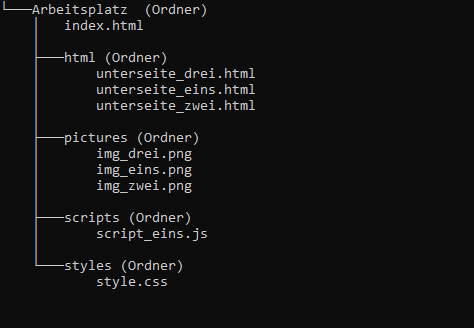

Je umfangreicher eine Seite werden soll, desto mehr Code muss auch geschrieben werden. Üblicherweise hat ein Html Dokument am Ende mehrere Hundert bis teilweise sogar Tausend Zeilen, um da noch den Überblick zu behalten muss man das Dokument entsprechend strukturieren. Aber auch die Dateienanzahl ansich kann schnell zunehmen, deswegen ist es genauso wichtig die verschiedenen Ordner in einer guten Sturktur zu halten.
Die Ordnerstrukur
Wie schon in Wie fang ich an Schritt 2 angesprochen hat man einen Ordner als "Arbeitsplatz". Er wird auch als "Root" (auf deutsch Wurzel) bezeichnet und ist der Ausgangspunkt für alles weitere. Aus diesem Grund ist die Startseite (oft index.html) auch dort meist die einzige Html-Datei. Alle weiteren werden in einem/ mehreren Unterordner/ n gespeichert (z.B. html). Auch CSS/ JavaScript - Dateien oder Bilder/ Videos sind in extra Ordnern um alles schön übersichtlich zu halten.
So ist die Standard Ordnerstrukur
Pfade?
Je mehr Unterordner ein Verzeichnis hat, desto länger werden auch die Pfade. Doch was sind diese Pfade überhaupt und wofür braucht man sie?
Um zum Beispiel eine Datei zu verlinken oder einzubinden muss man dem Computer/ der Html-Seite sagen wo sie diese Datei findet. Also kann man sagen, dass ein Pfad eine digitale Wegbeschreibung ist. Es gibt dabei zwei Möglichkeiten einen Pfad anzugeben:
Absolute Pfadangaben
Diese sind für Html eher nicht geeignet, denn diese beziehen sich immer auf das Stammverzeichnis des jeweiligen PC´s. Was bedeutet, wenn der Ordner mal verschoben wird sind alle Pfadangaben ungültig und müssen korrigiert werden.
Relative Pfadangaben
Diese beziehen sich immer auf den jeweiligen Wurzel-Ordner und sollten deshalb auch bei Html verwendet werden. Hier gibt es nun verschiedene Optionen:
Die Datei names test.png ist ein Beipiel und die beschriebenen Optionen zeigen wie man diese erreicht wenn sie an unterschiedlichen Orten gespeichert ist. Ausgangspunkt ist eine Html-Datei "bilder.html" und ein Bild "test.png" welches wir auf dieser einfügen möchten.
| Angabe | Ziel? |
|---|---|
| <img src="./test.png"> | Die Datei liegt im selben Ordner wie bilder.html (./ kann hier auch ganz weggelassen werden) |
| <img src="./pics/test.png"> | Die Datei liegt im Ordner "pics", dieser wiederrum befindet sich im selben Ordner wie bilder.html |
| <img src="../test.png"> | Die Datei liegt eine Ebene (Ordner) höher als bilder.html |
| <img src="../pics/test.png"> | Die Datei liegt im Ordner "pics", welcher eine Ebene höher als bilder.html ist |
| <img src="../../test.png"> | Die Datei liegt zwei Ebenen (Ordner) höher als bilder.html |
1. Clean-Code
Um den Code gut zu strukturieren nutzt man Tabstops, Absätze und Leerzeilen. Außerdem ist es
hilfreich verschiedene tags nicht in die gleiche Zeile zu schreiben. Generell wird in
"Blöcken" geschrieben, diese können selbst auch wieder weitere "Blöcke" enthalten. Ein neuer BLock
beginnt dabei immer mit einem tag und endet mit dem End-tag. Für jeden neuen
tag welcher also in einem anderen geöffnet wird nutzt man einen Tabstop. Dies hat zur
Folge, dass je mehr tags "ineinander" verschachtelt werden die Zeile weiter rechts beginnt.
Auch wird oft nach einem abgeschlossenen Block eine Leerzeile gemacht, dies kommt aber auch immer auf
den Inhalt an.
Generell kann man sich merken: Solange ein tag noch nicht geschlossen wurde, wird ein Tab anstelle des
end-tags gemacht, dies wird so lange fortgeführt, bis der tag geschlossen wurde. Man kann also sagen,
dass der Tabstop den Platz für den End-tag freihält.
Wenn ein tag zum Beispiel viel Text beinhaltet werden die
öffnenden - und schließenden tags immer in eine separate Zeile geschrieben. Generell kann
man sagen, wenn zwischen dem tag-Paar mehr als 80 Zeichen stehen schreibt man die
tags in jeweils separate Zeilen.
2. Clean-Head
Besonders bei Seiten welche viele externe Ressourcen brauchen bietet es sich an ihre Links ganz nach unten zu schreiben um einen besseren Überblick zu behalten.
Zwar ist es möglich CSS Code direkt auf der Html Seite einzubetten, jedoch sollte dies wenn überhaupt der letzte "Block" im Kopfbereich sein. Die Vorteile von CSS in externen Dateien werden hier beschrieben.